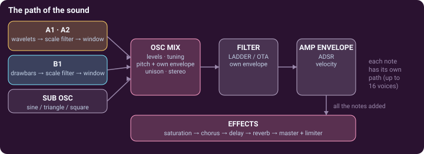
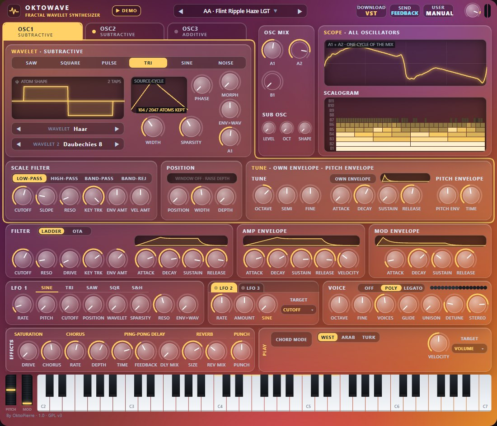

OKTOWAVE manual
Okto MultiWave Synth — a polyphonic synthesizer whose oscillators are built from wavelets. This page is the map; seven short pages explain the idea.
Start in one minute
In the browser
- Open the web app (Chrome or Edge).
- Click Play the synth, or Run the demo for a tour of the sounds.
- Play the on-screen keyboard with the mouse, the keys 1…0 and A S D F…, or a MIDI keyboard. Z / X change the octave.
The idea, and the seven pages
A normal oscillator repeats one smooth wave. A wavelet is a tiny wave that starts, rings and fades. OktoWave cuts a cycle of sound into wavelet “atoms” in 11 octave bands, and lets you work on the bands: turn them down with a filter, draw them with drawbars, keep only the strongest, confine the effect to one part of the wave.
| Wavelets | The principle of the wavelet decomposition, and the idea of making an oscillator of it. |
|---|---|
| Subtractive | Oscillators A1 and A2: a classic wave cut into atoms, then filtered by size and by place. 1 · The oscillator · 2 · Filter and window · 3 · Making it move |
| Additive | Oscillator B1: eleven drawbars, one per band, with a pattern and an envelope for every band. 1 · Drawbars and patterns · 2 · Atoms and scalogram · 3 · Playing with the others |

The panel

The panel is the same in the browser and in the plug-in, except for a few buttons (listed under the table). From top to bottom:
| Header | The preset box (◀ ▶ step through the sounds, a click on the name opens the preset browser), MANUAL, the master volume knob and the level meter. The demo (a piece played as a tour of the presets): ▶ DEMO in the browser, ▶ PLAY DEMO in the plug-in (it leaves your sound as it was; a second click stops it). Browser only: DOWNLOAD VST and SEND FEEDBACK (a short form that opens in a new tab: a bug, an idea, a sound you miss). Plug-in only: SAVE PRESET and the window-size button. |
|---|---|
| OSC1 · OSC2 · OSC3 | The three folder tabs choose which oscillator's cards you see (OSC1 and OSC2 are the subtractive ones, A1 and A2 in this manual; OSC3 is the additive one, B1). They never change the sound: a lit dot says the oscillator is heard, and what you hear is set by OSC MIX. |
| WAVELET · SUBTRACTIVE | The heart of A1 and A2: the wave, the wavelet, SOURCE CYCLE, MORPH, SPARSITY. → Subtractive 1 |
| WAVELET · ADDITIVE | The heart of B1: the pattern, the 11 drawbars, TILT, SEED, the band envelope knobs. → Additive 1 |
| SCALE FILTER | Low-pass, high-pass, band-pass or band-reject on band sizes, with slope, resonance, key tracking, envelope and velocity. → Subtractive 2, Additive 2 |
| POSITION | A window that confines the filter (A) or the detail (B) to one part of the cycle. → Subtractive 2 |
| TUNE · OWN ENVELOPE · PITCH ENVELOPE | The oscillator's own tuning, its private ADSR (it can only shorten it) and a pitch envelope. → Subtractive 3 |
| OSC MIX · SUB OSC | The three oscillator levels (an oscillator at 0 costs nothing) and the sub oscillator. → Additive 3 |
| SCOPE · ALL OSCILLATORS | One cycle of the whole sound, and under it the SCALOGRAM: rows are band sizes, bright cells are loud atoms. → Additive 2 |
| FILTER | A 24 dB resonant low-pass in every voice, LADDER or OTA, with its own ADSR. Open by default. → Subtractive 3 |
| AMP ENVELOPE · MOD ENVELOPE | The loudness of the voice (and VELOCITY); the MOD ENVELOPE moves the scale cutoffs and the wavelet morph. → Subtractive 3 |
| LFO 1 · LFO 2/3 | LFO 1 moves pitch, cutoff, position, morph, sparsity and resonance. LFO 2 and LFO 3 (two tabs) each move one control of your choice (TARGET) in every oscillator. → Subtractive 3 |
| VOICE · EFFECTS | Portamento (OFF · POLY · LEGATO), VOICES, GLIDE, UNISON, DETUNE, STEREO; then saturation, chorus, ping-pong delay, reverb, PUNCH (a stronger start of every note), master volume and a soft limiter. → Subtractive 3 |
| PLAY · CHORD KEYBOARD | CHORD MODE, BASS, the TUNING switch (WEST · ARAB · TURK) and the chord card: see Playing. VELOCITY: how much the velocity of your keys counts (50 %: a note played at half velocity is about 8 dB softer; 0 %: every note alike) and, in the menu under it, where it goes: VOLUME, FILTER (the cutoff of the FILTER card, which it switches in) or both. It stays when you change preset. |
| Keyboard | Five octaves, with the pitch and mod wheels at its left. Lit keys follow what is played, by you, by MIDI or by the demo. |
Working with the controls
- Drag a knob up or down; hold Shift for five times finer steps. The mouse wheel also works. Double-click (or Ctrl / Cmd + click) resets it to its default. Hover a knob to read its value.
- Right-click a control in the browser to link a MIDI knob (MIDI learn; Esc cancels). A greyed-out control has no effect with the current settings (WIDTH unless the wave is PULSE or TRI).
- Browser only: Save preset, Export, Import in the bar under the panel. Plug-in only: the SYNC buttons lock the delay and the LFOs to the tempo of your DAW.
Playing
CHORD MODE
The CHORD MODE button of the PLAY card turns the keyboard into a chord harp and shows the CHORD KEYBOARD card under it. One octave of keys (KEYS OCT, tinted on the keyboard) chooses the chord type and makes no sound; every key above it plays the whole chord with one finger. The twelve pads show the types (Maj, Min, 7, m7, Maj7, Sus2, Sus4, Dim, Aug, 5, Add9, Note); a click on a pad chooses one. VOICING stacks the chord or folds it into one octave, STRUM starts its notes one after the other (the strum plate strums it with the mouse), and BASS adds the root two octaves below. These are playing settings, never part of a preset.
Oriental tunings
The TUNING switch gives the keyboard quarter tones. WEST is equal temperament. ARAB plays 24 tones to the octave; TURK plays the 53 commas of Turkish music. Outside WEST the card shows MAQAM (the scale: Rast, Bayati, Saba, Hijaz…) and TONIC; the panel takes sand-gold (ARAB) or carmine (TURK) colours with an oriental pattern on the PLAY card. The demo always plays in equal temperament.
The demo
In the browser, ▶ DEMO plays Beethoven's Appassionata while the sounds change every few seconds; its window presents the synthesizer, one sentence per sound. ■ STOP (or Esc) stops it and puts every control back.
Presets
OktoWave has 208 presets, all kept by its author after his own listening. Nineteen end with LGT: lighter versions of sounds that ask a lot of the computer (less modulation, fewer unison voices); the full versions of the favourites among them are in Other, marked HIGH_CPU. TOP Sounds come first, then the sections of the author's favourites (Pad, SuperModulation, Bass, Lead, Strings, FX) and Other, which holds every other sound. In the plug-in, ▲ UP and ▼ DOWN above the list move the sound you play up or down in it (your order is kept in your presets file). The letters at the start of a name say which oscillators it uses (A, AA, AB, AAB, B).
- Choose a sound with ◀ ▶, or click the preset name to open the preset browser: one click plays a sound, the arrow keys move in the lists. It shows the author's stars (1 to 10).
- Browser: Save preset keeps your sound in this browser, Export writes a
.jsonfile, Import reads one. - Plug-in: SAVE PRESET adjusts the sound playing (RESTORE brings the original back) or replaces a sound of your USER BANK, which starts with a KeyAttac folder of percussive favourites. Everything lives in one readable file,
OKTOMULTIWAVE presets.txt, next to the.vst3folder.
Install the plug-in
Windows (VST3 · VST2)
- Copy the whole
OktoMultiWaveSynth.vst3folder intoC:\Program Files\Common Files\VST3(administrator rights), or into your VST2 folder. - Rescan in your DAW (Ableton Live: Preferences → Plug-ins → Rescan).
- The presets file is written next to that folder, so it must allow writing: install in a folder you own if you cannot write there.
macOS (VST3, Apple silicon and Intel)
- Copy
OktoMultiWaveSynth.vst3into~/Library/Audio/Plug-Ins/VST3(your own folder, so the presets file can be written). - The plug-in is free and not signed with a paid Apple certificate: allow it once with
xattr -dr com.apple.quarantine ~/Library/Audio/Plug-Ins/VST3/OktoMultiWaveSynth.vst3in Terminal, or System Settings → Privacy & Security → Open Anyway. - Rescan in your DAW. Logic Pro and GarageBand only load Audio Units and cannot use it. On a Mac, Cmd-click resets a knob and Control-click is a right-click.
Help
No sound in the browser
Browsers only allow sound after a click: click Play the synth in the welcome window. The status bar must say Audio on. Only one tab plays at a time.
I click an oscillator tab and the sound does not change
By design: the tabs only choose which cards you see. The sound is set by the three levels in OSC MIX (a fresh patch plays A1 only).
A knob has no effect
Check the level of the oscillator you are editing in OSC MIX (an oscillator at 0 is silent) and whether the control is greyed out. With the FILTER wide open, its cutoff does nothing.
It crackles, or the page slows down
The cost grows with VOICES × UNISON × the oscillators that are on. Lower UNISON or VOICES, turn off oscillators you do not hear, open the FILTER, or use the plug-in, which has the whole computer's time. A few sounds with long releases and many unison copies are heavy on a slow computer.
The plug-in does not appear in my DAW
Copy the whole bundle folder (not only the file inside), then rescan. On Windows the DAW must see the VST3 (or VST2) folder you used.
SAVE PRESET says it cannot write
The presets file sits next to the .vst3 folder, which must allow writing. Install the plug-in in a folder you own, or run your DAW as administrator once.
Credits and thanks
- Demo music: MIDI from the Mutopia Project — Beethoven's Piano Sonata No. 23 Appassionata, Op. 57 III (public domain).
- VST3 interface headers: Steinberg Media Technologies, MIT licence. Wavelet filter coefficients generated with PyWavelets (MIT).
- Thanks to Jérémie Palmigiani, aka Soul Machine.
Instagram: https://www.instagram.com/djsoulmachine - Thanks to Soul Machine, Flo (Go Tiger) and Arnaud Grignard for testing and review of the Wavelet Synthesizer.